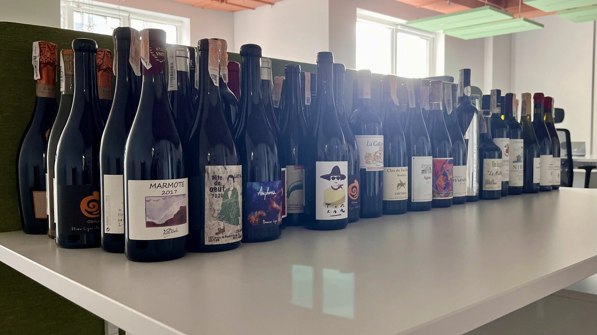

Monthly report - September 2022

September was an unexpectedly active month. We had four tasting events as part of Barberry Garden instead of the three planned. I visited one tasting event and had to reject joining others because it was becoming too much. After all, wine is just one of my hobbies, and I have to divide my spare time more or less evenly between other activities. While it may sound like complaining, I am happy that so much has happened over these 30 days. And look at the news!
Anyways, out of 100 consumed wines, 90 were rated (for some reason, two wines were rated twice). Since the autumn has kicked in, my choice has shifted towards red wines (who would guess?) - only a third of rated wines are whites. And by the way, fewer sparkling wines (only seven bottles).
Novelties
- 7.5 Bott Frigyes Juhfark 2019 is my first Juhfark and my first Slovakian wine.
- 7.5 Caravaglio Occhio di Terra Salina 2019 is my first IGP Salina.
- 7.5 Lyme Bay Bacchus Block 2018 is my first wine from Devon, England.
- 7.8 Bret Brothers Pouilly-Loché Climat La Colonge 2018 is my first Pouilly-Loché AOC.
- 7.7 Le Vieux Télégraphe Châteauneuf du Pape Clos La Roquète 2020 is my first Châteauneuf-du-Pape AOC, and first Clairette and Roussanne.
- 7.0 Casa Coste Piane Brichet Frizzante …Naturalmente NV is my first Verdiso.
In terms of novelties, this month was not as fruitful as previous months, but I have lots of curious stuff prepared for the next one. After all, we are going to have a wine tasting dedicated to atypical combinations of grapes and locations.
Favourites
Traditionally, preparing a list of my favourites is a tough task to accomplish. I try to avoid listing wines based solely on my scores (you can do it yourself by sorting the table below). Instead, I try to pick wines that really stood out for me. So this month my favourites are the following bottles.
- 8.5 Ca’ di Mat Fuente de los Huertos 2017 is a sophisticated high-altitude Garnacha that I simply fell in love with. One of my favourite reds of the month.
- 8.5 Antoniolo Gattinara 2014 is a beautiful and sexy Nebbiolo in a good age for a good price. One of my favourite reds of the month.
- 8.5 Škerk Ograde 2017 is my favourite orange of the month. I could not resist and took one more bottle to enjoy it later myself.
- 8.5 Patrick Sullivan Baw Baw Shire Ada River Chardonnay 2018 is my favourite white of the month. Unfortunately, it was hard to get this particular vintage.
- 8.5 Egly-Ouriet Brut Grand Cru (d2020) NV is my favourite traditional sparkling of the month.
- 8.0 Le Grappin Fleurie-Poncié 2020 is a Gamay without any buts (no more jokes). A bargain. One of my favourite reds of the month below $20.
- 7.5 Foradori Lezèr 2020 is my favourite
rosélight red wine of the month. Pure enjoyment.
And these are honourable mentions.
- 8.0 Clos du Tue-Boeuf Rouillon Cheverny 2020 is an incredible blend of Pinot Noir and Gamay by skilful brothers. 2nd place on Mixed Bag Vol. 3.
- 8.0 Gentle Folk Little Creek Pinot Noir 2020 is a wine you should try to stop being a snobbish sceptic when it comes to Australian wines.
- 8.0 Domaine Rossignol-Trapet Savigny-Les-Beaune Les Bas Liards 2019 is a wine that managed to receive high scores in an Opaque Tasting Vol. 1. By the way, one of my favourite producers.
- 8.0 Tomislav Marković Quo Vadis 2019 is an atypical Riesling with prevalent secondary aromas. A must try in my opinion.
- 8.5 Sous Le Végétal Palli et Genesia 2018 it could be the outcast, it could be the favourite. It’s so controversial that I decided to mention it in this list. Personally, I like this style - whites under flor. Neat.
Outcasts
It’s not going to be a long list as this month was flooded with good wines.
- 6.0 Costadilà 450 slm NV together with other new releases by Costadilà. Not as fun as previous releases.
- 7.0 2Naturkinder Spätburgunder 2017 is a wine that I like to think about more than I like to drink. IMO they can do better.
Countries
Every month my top 3 rated countries stay the same. The only thing that changes is the order. So I am more interested in the countries that come below. This time the first one is Hungary (ouch!), with an average score of 7.37. Then goes Germany with a 7.97 average score, which is one of the highest country-based scores this month. Well, Wasenhaus and Tomislav Marković, it’s your merit.
I am happy to see Moldova, England and Slovakia on this list. And I am also happy to see more wines from New Zealand. Great.
Vintages
This month the oldest vintage is 2010. It’s sad to see 2012 missing. I would have rated wines from all vintages starting with 2010. According to my notes, 2018 and 2017 are the best vintages, with average scores of 7.85 and 7.84, respectively.
Grapes
I am getting less festive in terms of grapes. This time only 63 grapes are on the list. Yet there are novelties: Juhfark, Roussanne, Clairette and Verdiso. Four new grapes? Well, it’s still something.
Besides novelties, I am happy to see some other rather rare grapes. Like Trousseau, Mencía, Palomino Fino, Garnacha Blanca, Moscato Giallo, Muscat de Samos, Teroldego, Vitovska, Sousón, and some others.
And quite expectable, with the fall in white wine consumption, Chardonnay, at last, has dropped from the second position.
All ratings
Final words
September was crazy. As much as I would love to organise more wine tasting events to meet demand, four events in one month are too much for me. At least in the current format. I want to maintain quality and provide all that extra that usually comes with my events. So in the next month, I plan only two events - one dedicated to atypical combinations of grapes and locations and one - to wines of Spain.
Safe travels!